| 日付 | 2024年11月30日（土） |
|---|---|
| 山域 | 道志山塊 |
| メンバー | 家族（妻） |
| 山行形態 | 日帰り |
| アクセス | 車 |
| ルート (Map) | 二十曲峠 (8:22) - (9:13) 立ノ塚峠 - (10:07) 子ノ神 - (10:32) 杓子山 (11:32) - (12:06) 鹿留山 - (12:57) 立ノ塚峠 - (13:41) 二十曲峠 |
11月に入り急に寒くなった。富士山初冠雪のニュースも流れてきて、もう季節は冬だ。
ここ最近、富士山を眺めていなかったので、新雪に輝く富士山を見に杓子山に行くことにする。
2009年以来、15年振り3度目の訪問だ。
二十曲峠の駐車場に車を停める。標高1150m。
峠の駐車場はいっぱいだったので、少し手前の駐車場に車を停める。
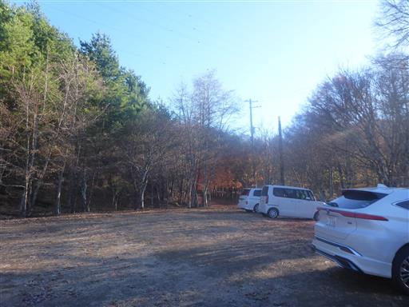
周囲は紅葉がきれいだ。標高が高い場所なのでもう終わりかけだ。
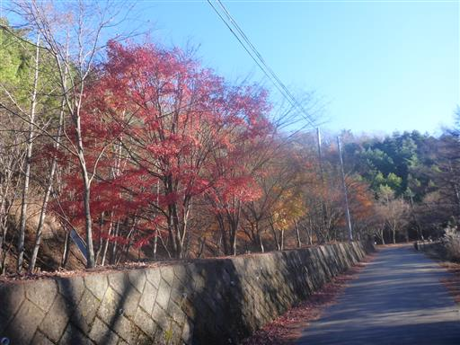
二十曲峠に移動。
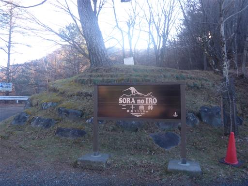
ここからは富士山が真正面に見える。登る前から絶景だ。
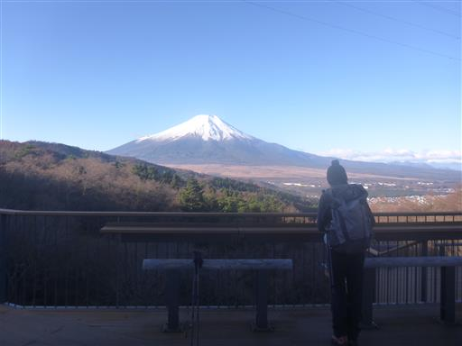
立派な松の木。
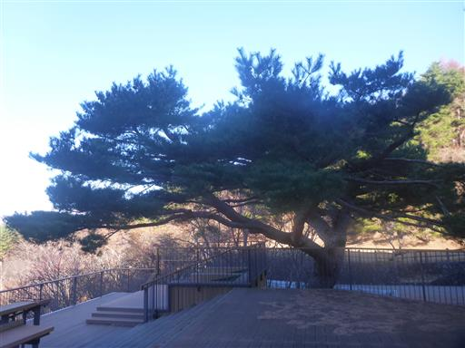
展望テラスがあり、三角形の形になっている。
吹き溜まりになっているせいか落ち葉が堆積している。
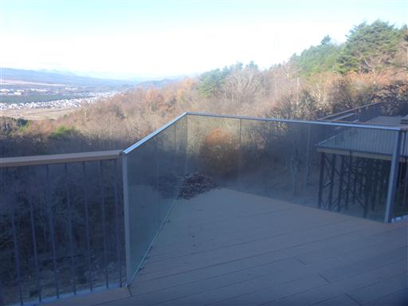
登山開始。最初は笹の中の道だ。
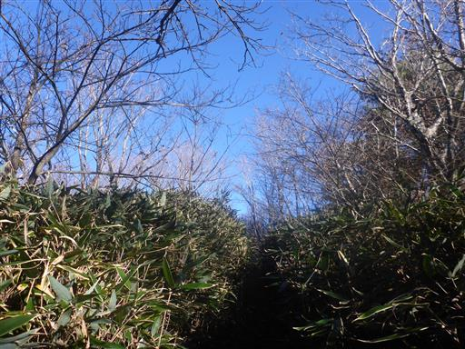
しばらくすると冬枯れの平坦な尾根道になる。
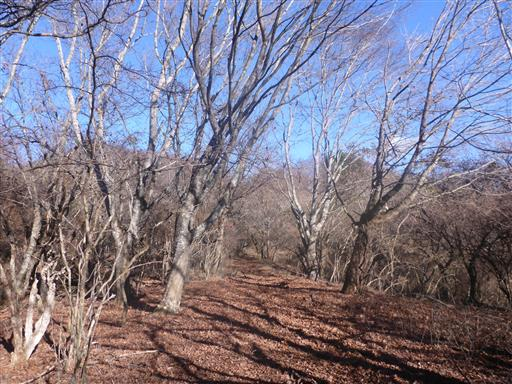
赤い実がなっている。何の実だろうか？
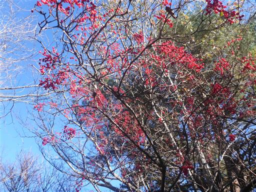
目指す鹿留山・杓子山方面。まだまだ距離がある。
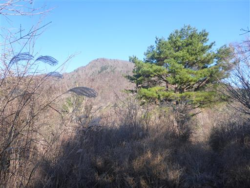
立ノ塚峠を通過。18年前に登った時はここを通ったはずだが、もう記憶にない。
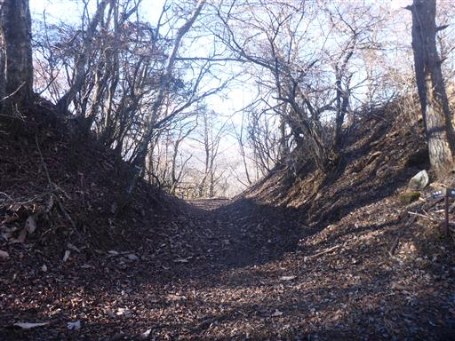
この辺りから本格的な登りになり、傾斜が急になる。
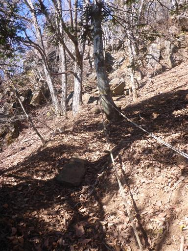
岩場が現れる。岩場があったことも覚えていない。
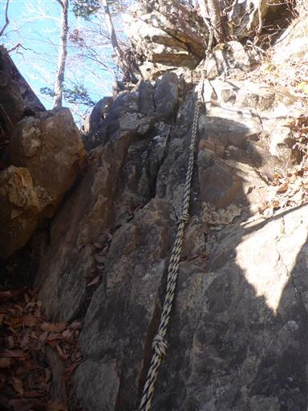
霜柱。富士山周辺の山々は霜柱が大きく育つ。
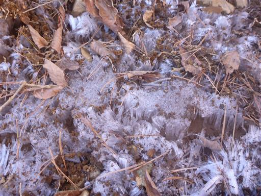
松の木と富士山。
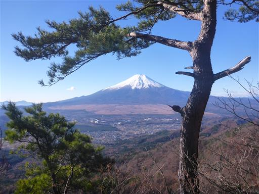
再び岩場。
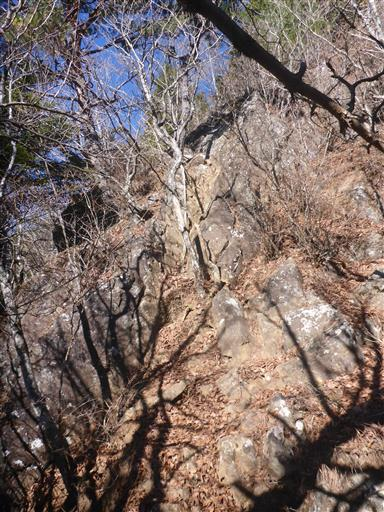
鹿留山との分岐点に到着。鹿留山は帰りに寄ることにして、まずは杓子山を目指す。
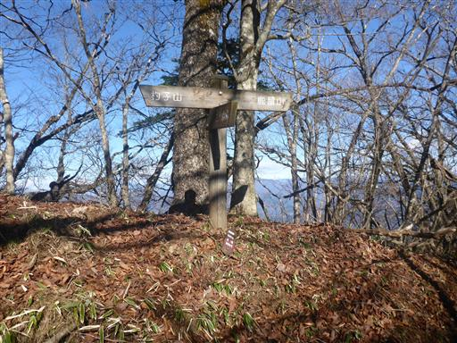
気持ちの良い稜線。
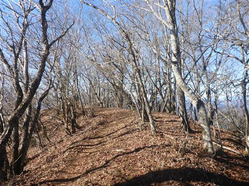
子ノ神。標高1630m。
尾根の途中であまりピークという感じがしないが、実際は標高1630mを少し越えており、
ここが本日の最高地点かもしれない。
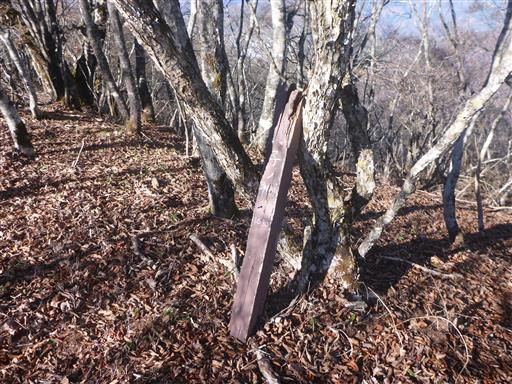
立派なブナの木。
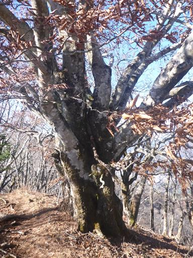
山頂直下は短い笹原。
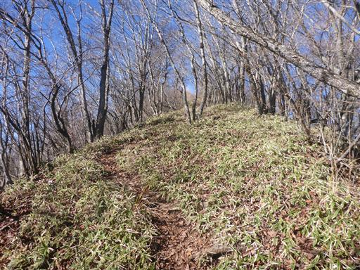
杓子山山頂に到着。標高1598m。
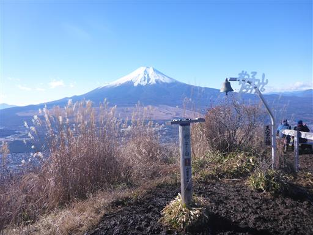
山頂からの景色。
富士吉田市の市街地、御坂の山々、そして奥には南アルプスが見渡せる。
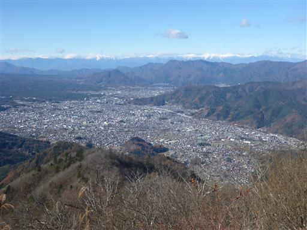
目の前には大きな富士山。本日は快晴だ。

山頂部は泥だらけ。早朝は霜柱ができ、太陽が出た後、
多くの登山者が踏みつけるからこうなってしまうのだろう。
昼食を取ったら下山。
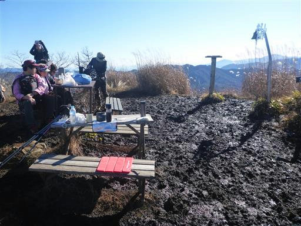
帰りは鹿留山に寄り道する。標高1632m。
山頂の真ん中にある大木は18年前と変わらぬ姿だ。
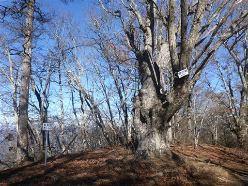
岩の上に立つ木。岩と木の模様がそっくりだ。
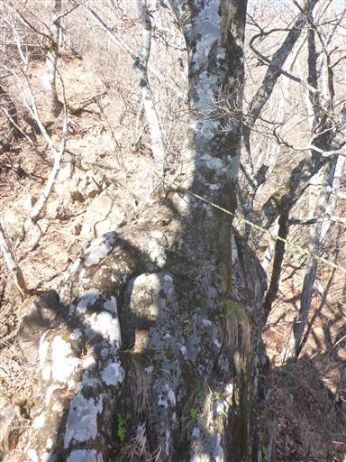
岩場を慎重に降る。先週の高岩に比べると楽勝だ。
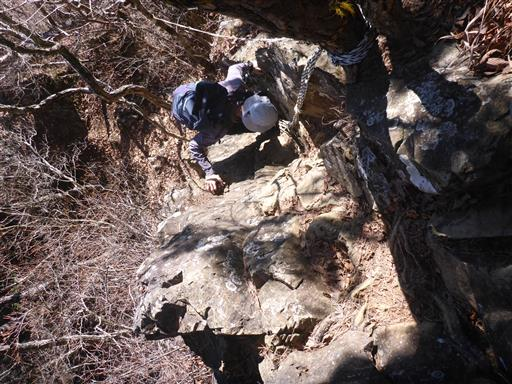
下山が近づくとススキが多くなる。秋の景色だ。
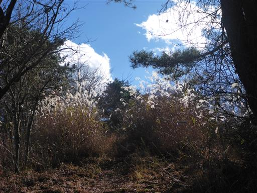
無事下山。

二十曲峠から再び富士山を眺める。
雲がかかり始めているのと、逆光でシルエットしか見えない。
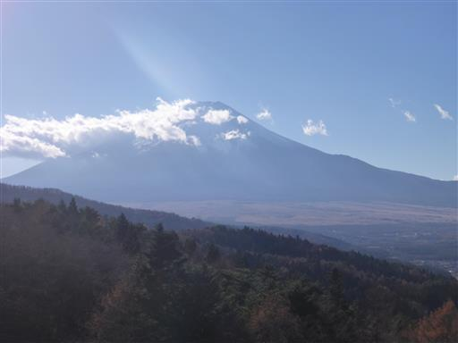
寝転んで富士山を眺められるようになっている。しかし網の上は体がちょっと痛い。
少し休憩したら車に戻る。
久々の杓子山は、以前と変わらず素晴らしい富士山の展望台だった。
登山道もゆったりした場所あり、急坂ありの変化にとんだ稜線で、歩いていて楽しかった。
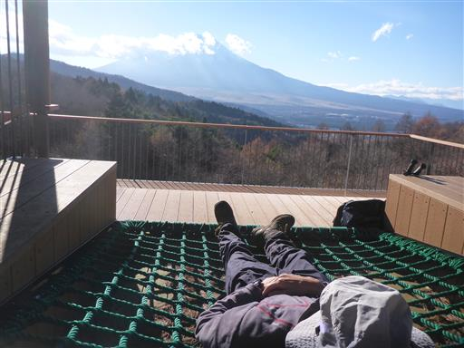